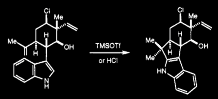

Fukuyama, T.; Chen, X. J. Am. Chem. Soc., 1994, 116, 3125-3126.
Three articles citing that paper are:
Li, J. T.; Sun, M. X.; Yin, Y. Ultrasonics Sonochemistry, 2010, 17, 359-362.
Kuo, C. W.; Wang, C. C.; Fang, H. L.; Raja, B. R.; Kavala, V.; Habib, P. M.; Yao L. F. Molecules, 2009, 14, 3952-3963.
Fuwa, H.; Sasaki, M. Org. Biomol. Chem, 2007, 5, 2214-2218.
All three of these articles deal in indol reactions, but none of them are particularly relevant to our reaction because the relevant chemistry in Fukuyama and Chen's paper was only mentioned as an unintended reaction while they were trying to do another reaction.
Fukuyama and Chen found that the reaction shown below formed the 2-substituted indol exclusively: 
This transformation is biomimetic, as both TfOH and indol-containing molecules are common to biological systems. This aspect is very important to Richter et al. as "Biomimetic syntheses are often more efficient due to the tactics that Nature employs, namely rapid assembly of skeletal complexity, a linear increase of oxidation state, use of mild and simple reagents, and the ability to control chemoselectivity (lack of protecting groups)."
Interestingly, this was not Fukuyama and Chen's desired product. Rather, they were attempting to create a 6-membered ring (carbocation formation at the primary rather than secondary carbon of the terminal alkene.) They found, however, that the reaction formed the 5-membered ring exclusively and so proceeded with their reaction by a different path.